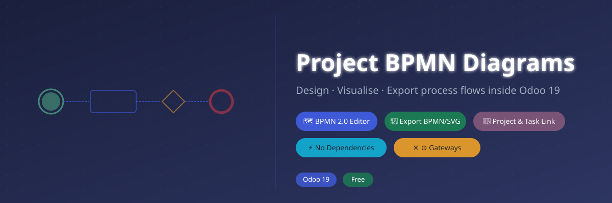
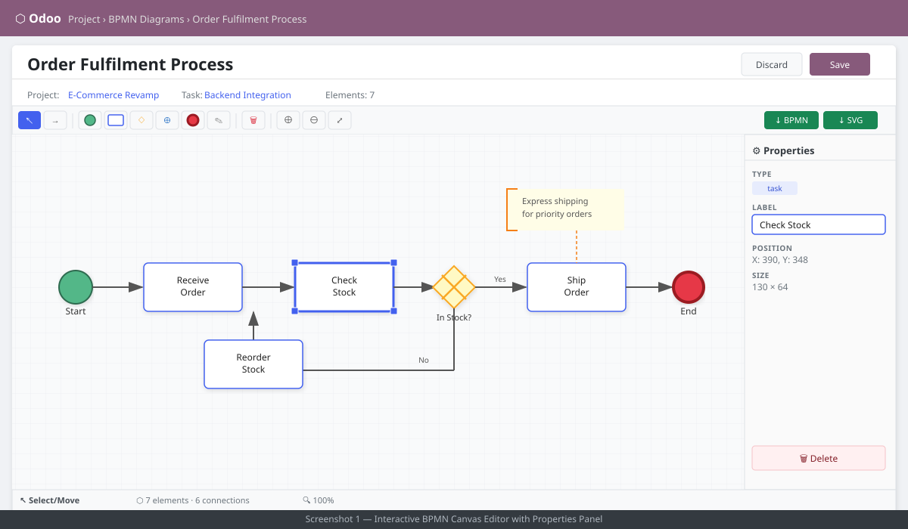
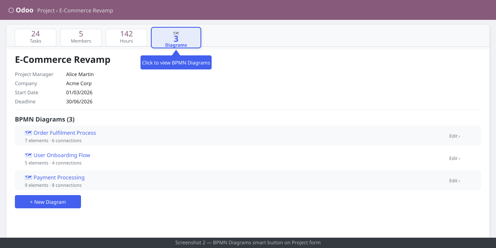
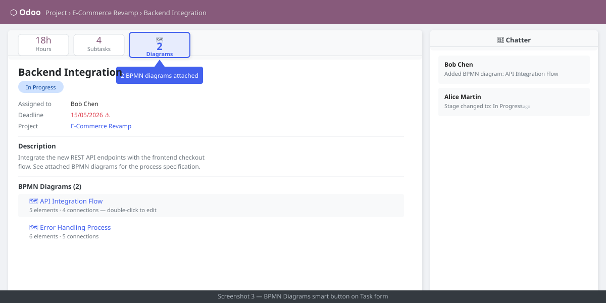
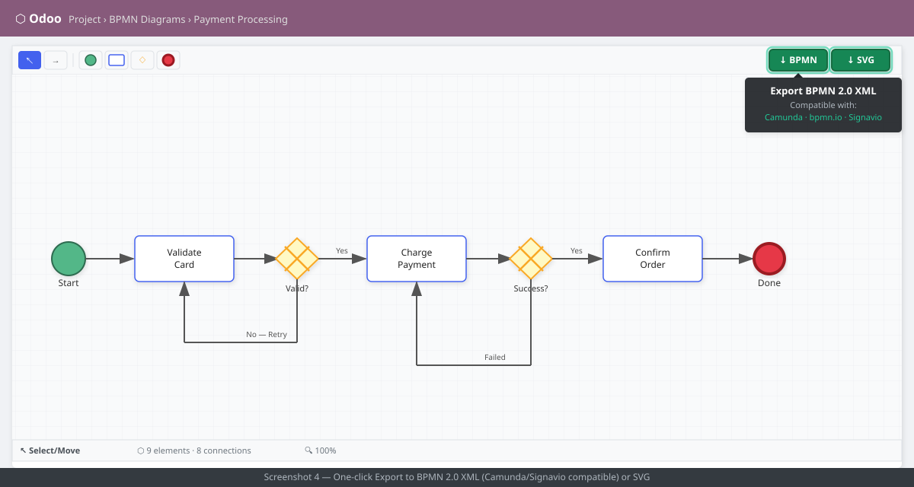

Project BPMN Diagrams brings a fully interactive, self-contained BPMN 2.0 process editor directly into Odoo 19. Create, edit, and export process diagrams without leaving your project or task — no external dependencies, no browser plugins required.
Attach unlimited diagrams to any project or task. Use the drag-and-drop canvas to model business processes step by step using standard BPMN 2.0 notation. Export diagrams as BPMN XML (importable in Camunda, Signavio, bpmn.io) or as SVG for presentations and documentation.
Interactive SVG canvas with drag-and-drop placement, element selection, and inline label editing. No external JS library needed.
Start/End Events, Tasks (rounded rectangles), Exclusive Gateways (XOR), Parallel Gateways (AND), Sequence Flows, and Text Annotations.
Switch to Connect mode, click a source element, then click a target — a labelled sequence flow arrow is created automatically.
Mouse-wheel zoom, toolbar Zoom In/Out buttons, and a Fit to Screen control to keep your diagram in view at any scale.
One-click download of a valid BPMN 2.0 XML file importable in Camunda Modeler, Signavio, bpmn.io, and other BPMN-compatible tools.
Download the diagram as a crisp SVG file — perfect for inserting into Word, PowerPoint, Confluence, or any documentation system.
A counter smart button appears on every Project and Task form showing how many diagrams are attached. Click to open the list directly.
Every BPMN diagram inherits Odoo's mail.thread mixin — log notes, schedule activities, and track diagram changes over time.
Delete / Backspace removes selected elements, Escape resets the active tool, Enter confirms inline label edits.




| Component | Description |
|---|---|
project.bpmn.diagram | Core model — stores diagram name, JSON canvas data, links to project/task, mail thread |
project.project (extend) | Adds bpmn_diagram_ids one2many and smart-button counter |
project.task (extend) | Adds bpmn_diagram_ids one2many and smart-button counter |
OWL Field Widget bpmn_editor | Custom text-field widget — renders the full interactive SVG canvas inside any Odoo form |
| BPMN 2.0 XML Generator | Pure JavaScript, no external library — converts internal JSON to spec-compliant BPMN 2.0 XML |
| SVG Exporter | Serialises the live SVG DOM element to a downloadable vector file |
| Property | Value |
|---|---|
| Odoo Version | 19.0 |
| Dependencies | project, mail |
| External Libraries | None — fully self-contained |
| License | LGPL-3 |
| Frontend Framework | OWL 2 (Odoo standard) |
| Export Formats | BPMN 2.0 XML, SVG |